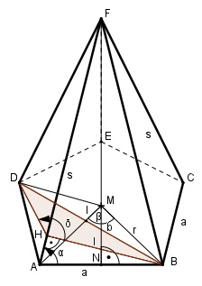

Aufgabe 174 Eine gerade regelmäßige fünfseitige Pyramide hat die Grundseite a = 10 cm und Seitenkanten s = 13 cm. Wie groß sind der Winkel α zwischen Grundseite und Seitenkante und der Winkel δ zwischen zwei Seitenflächen?

Im Dreieck ANF: a/2 10/2 cm cos α = ----- = ---------- = 0,3846 --> α = 67,4° s 13 cm Um δ zu bestimmen, ist die rote Ebene durch H senkrecht zu einer Seitenkante gelegt worden. Im Dreieck ABH: l sin α = --- |*a a l = a * sin α = 10 cm * sin 67,4° = = 10 cm * 0,9232 = 9,2 cm n = Anzahl der Ecken 360° 360° β = ------ = ------ = 72° n 5 r = Radius des Umkreises Im Dreieck NBM: a/2 sin β/2 = ----- |*r r r * sin β/2 = a/2 | *2 2 * r * sin β/2 = a |:2 * sin β/2 a r = -------------- = 2 * sin β/2 10 cm 10 cm = -------------- = ------------- = 8,5 cm 2 * sin 36° 2 * 0,5878 Im Dreieck IBM: (rechter Winkel bei I) b sin β = --- |*r r b = r * sin β = 8,5 cm * sin 72° = = 8,5 cm * 0,9511 = 8,1 cm Im Dreieck HBD: Fall SSS: Cosinussatz: (2 * b)2 = l2 + l2 - 2*l*l*cos δ |+2*l*l*cos δ 4 * b2 + 2 * l * l * cos δ = l2 + l2 |-4 * b2 2 * l * l * cos δ = l2 + l2 - 4 * b2 |:2 * l * l l2 + l2 - 4 * b2 cos δ = ------------------ = 2 * l * l 9,22 cm2 + 9,22 cm2 - 4 * 8,12 cm2 = ------------------------------------- = 2 * 9,2 cm * 9,2 cm = - 0,5503 --> δ = 123,4°